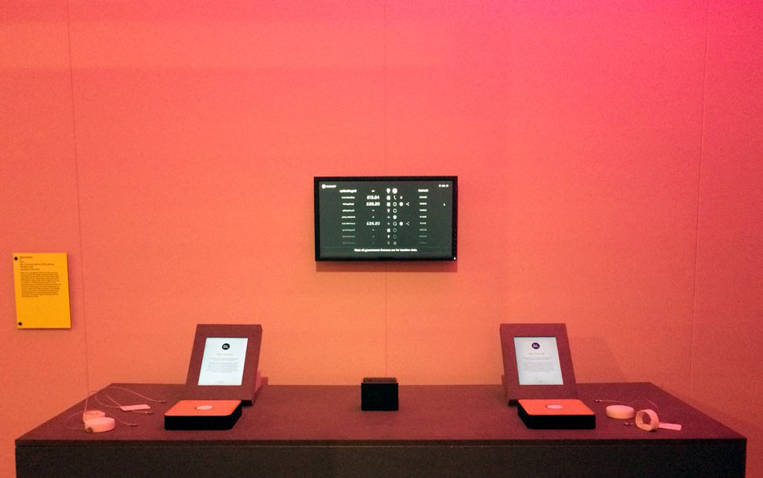
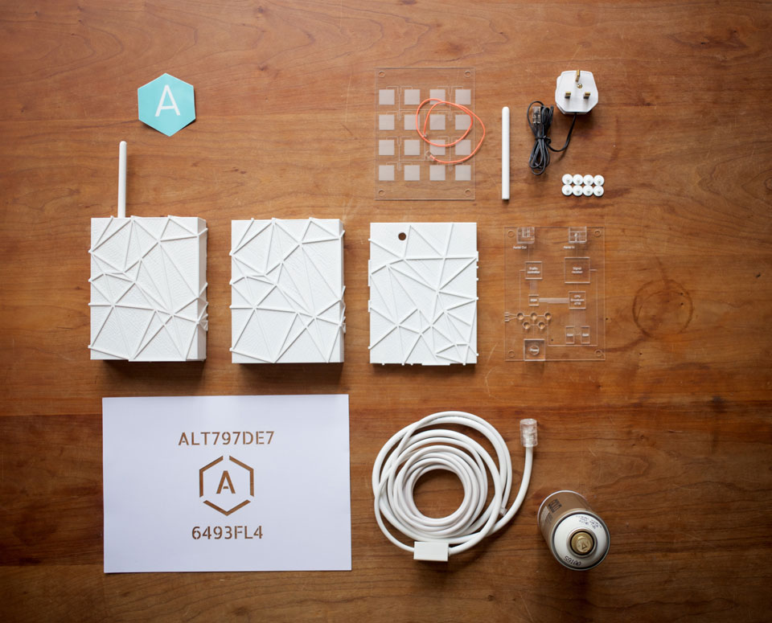
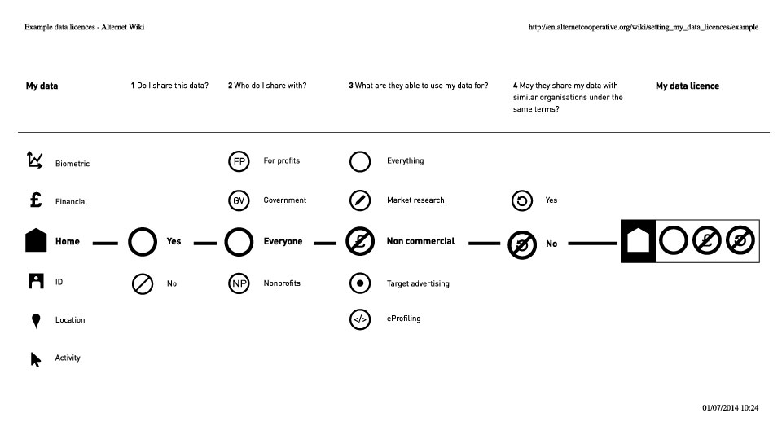
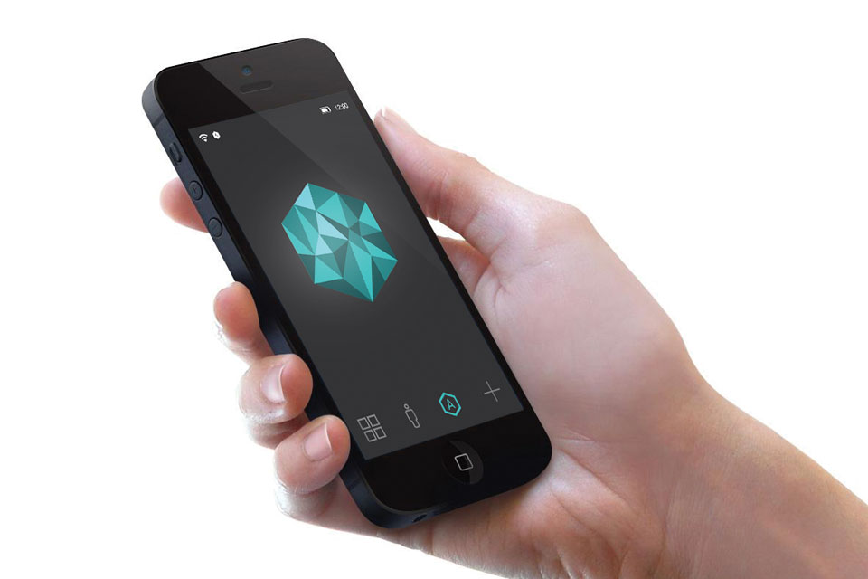
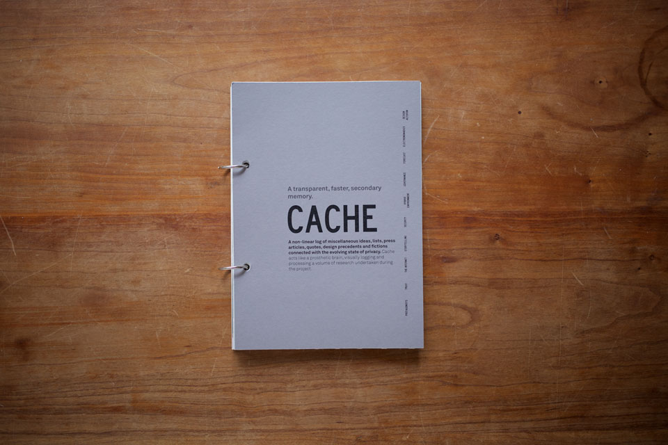
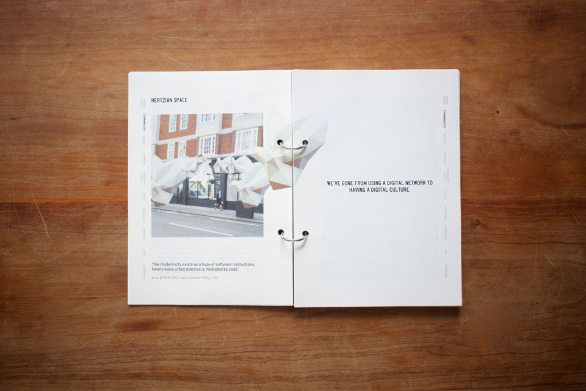

In December 2015 Sarah started IF, a creative company established to imagine, design and make digital tools that empower people in an Internet age. Sarah works full time at IF as Director and strategic designer.
An ongoing research project that began in summer 2015, Planetary Scale Design is a collaboration with Ben Vickers, Ola Moller and Carina Niamh. The purpose is to host conversations around the world to discuss what planetary scale design is, how it affects us and ultimately find out what we could do about it.
Data licences are a new consent model for data, giving individuals control of their data. Individuals agree that the other party may share their data but only under terms that they agree to. A data licence is made by answering four, straightforward, multiple choice questions in sequence. Data licences let individuals set the rules of engagement, they shift people from being passive consumers to engaged peers.
The idea originated from the Alternet. It was developed collaboratively with other designers and developers between September 2014 and December 2015 which resulted in a technical white paper for data licences on blockchain technology and an exhibition. Both the white paper and exhibition explored the idea that licences could unlock instant and legacy nano-payments for data, so companies could share their profits from the digital economy with their users.
The Alternet is a proposal for a telecommunications network, a public utility for the Internet age - created, controlled and owned by everyone. The Alternet gives people ownership and control of their data through straightforward data licences.
There are three main components in the Alternet superfiction:
1 Hardware
The Alternet is a long distance mesh network so the Alternet grows organically with each new router that is added. The router cases are made in any colour filament on a standard desktop 3D printer.
The cases are designed to prevent malicious nodes from being added to the network. Each router is printed with a fingerprint that is unique and verifiable against a public database of router IDs so any compromised router is automatically removed from the network until the community are able to assess it. In addition, the routers are made with special catches that mean to adapt the router requires the printed box to be physically broken, acting as a visual warning that the router has been compromised. These security solutions are designed to make it ‘just hard enough’ to deter people from maliciously adopting the network.
2 Data Licences
The network is positioned between the data sharing capacity of the the Internet and the obfuscation of the Darknets. Individuals share their data openly in data commons, or under certain terms through data licences. There are numerous local and international derivative markets that form as a result of quality data shared by consent.
3 Data Barometer
Similar to a traditional weather barometer, the data barometer makes an invisible material visible and actionable. Each time an individual opens their Alternet operating system they see their barometer.
The barometer is colour agnostic, it changes colour depending on the last service to request the individual’s data. Sarah built a digital prototype of the barometer.
The Alternet was Sarah’s MA Industrial Design major project completed in May 2014, it was widely documented in the technology press. Sarah wrote the brief for the Alternet at the Maker Faire in New York in August 2013 where she helped to build a WikiHouse with Sketchup. Many of the Sketchup employees were wearing Pebble smart watches and the Snowden revelations had just come out. There were many conversations about data and privacy shared over various dinners that prompted Sarah to make her project engage with privacy and the Internet.
For more on the Alternet:
- Academic dissertation, Alternet Rules
- Short presentation deck
- Chronice and forecast drawing
- Alternet network
- Alternet Cooperative, Hello World
- Hardware specification
A physical cache and short film processing and distilling research undertaken at the beginning of the Alternet project. The Cache was updated until May 2014 - the Cache is an artefact of its time.
 